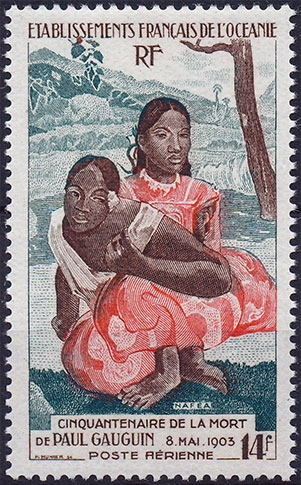

Less is more
(Ludwig Mies van der Rohe, architect)
I started this Art on Stamps site in October 1996, at a time when the WWW still was in its infancy. Compared to today, we the webmasters were limited quite everywhere. The monitors' resolution was low, and the transmission speed on the Internet was by at least two orders of magnitude lower than today.
My first scanner was a manual, low resolution Logitech, that was rather difficult to use. Even so, I was obliged to drastically reduce the resolution of scanned stamp images, this to reduce the loading times of my pages. For historical reasons a few of these images are still present on my site.
My intention was to attract as many as possible internauts' to the wonderful world of collecting the stamps belonging to the arts topic, stamps that I started collecting in the beginning of the 1960th. My extensive collection was and still is the source of inspiration for the articles published on this site.
Very early, by using some of my IT skills, I created a free club, named PASIC (Paintings and Art on Stamps Internet Club), that grew in time to over 800 members. In the same time I started compiling and I published on this site a free Internet database of worldwide stamps depicting art. Several PASIC members helped me later a lot to update it.

Periodically I informed the participants in the then very active philatelic newsgroup RCSD (news:rec.collecting.stamps.discuss) about my new pages. The discussions that followed were sometimes interesting and inspiring, this being the reason why I published some of them on this site (menu point "My Column").
A few years later, under the influence of the works of one of my pupils and followers, that applied my concepts in a somehow inflationary manner, I distanced myself from my initial ideas and I published less, but in a more original, detailed and personally related manner. The resulted articles were stronger related to what I remembered and felt when I was studying/admiring different stamps from my collection. The "Recent Pages" menu point gives an idea of what I'm talking about.
My researches in the realm of abusive issues led me to reconsider parts of the philatelic material that I gathered over the years. I apologize for presenting some of it on this site and I invite you, for your own good, to read this page, published by me on the Philatelic Webmasters Organization site.
The evolution of the Internet goes sometimes into unpredictable directions. Because the Java applet that I used for the menu since 2005 is regarded with a lot of suspicion by the modern browsers, I replaced it a few days ago by one that is better tolerated. Let us hope that the further evolution of Web technologies will give me a few years of peace and it will allow me to concentrate my efforts on my preferred topic, the Art on Stamps.